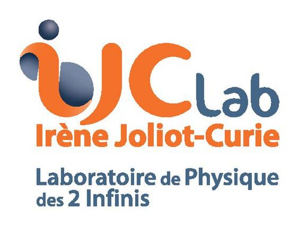
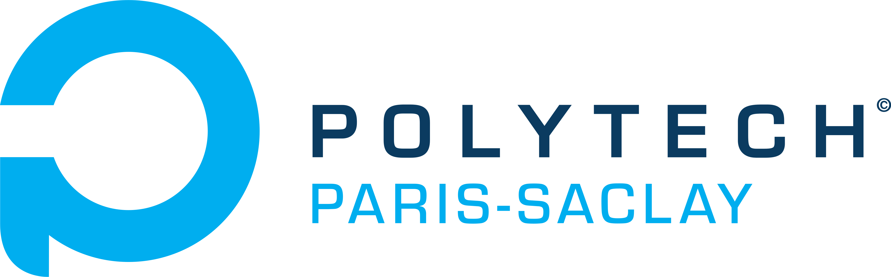
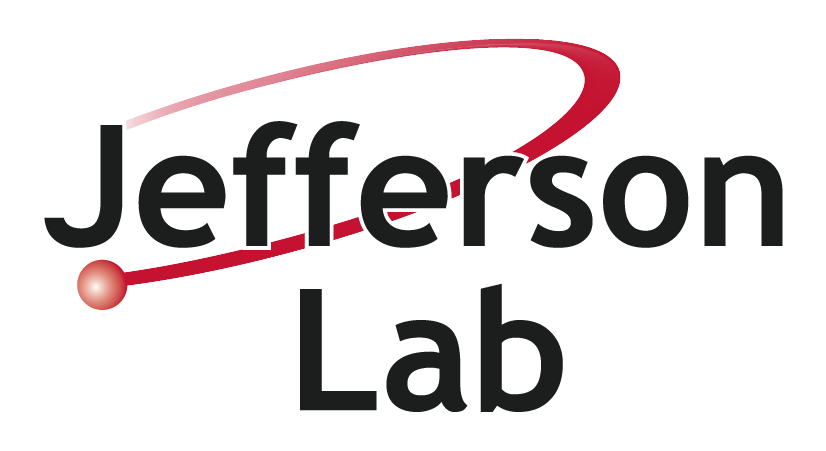
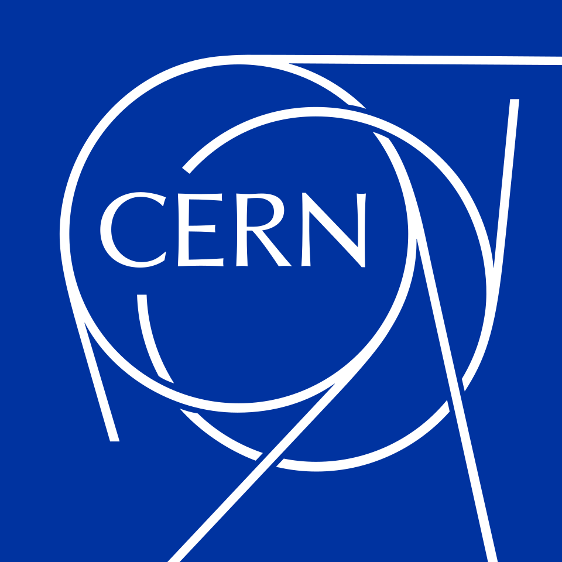
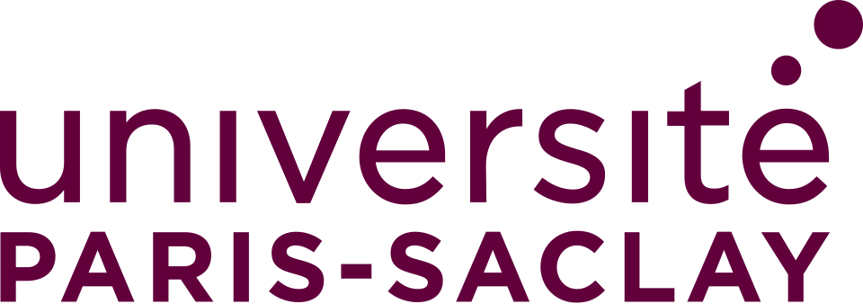
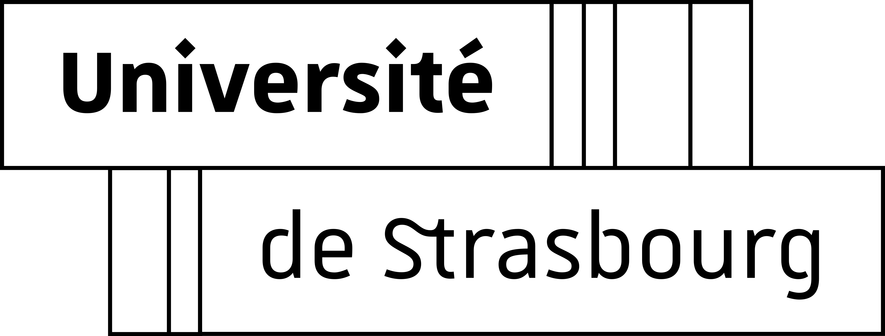
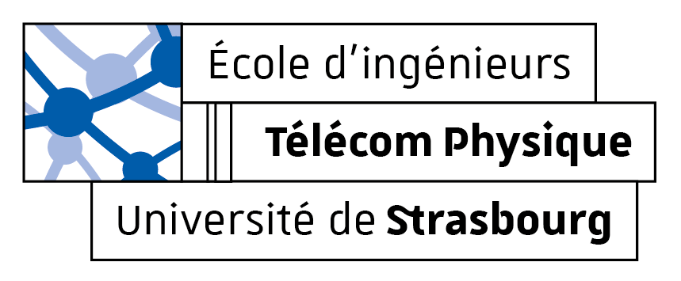

Experience

PhD Researcher
IJCLab \( \cdot \) Université Paris-Saclay
Orsay, Île-de-France, France
October 2024 - Present
- Member of the CLAS Collaboration
- Lead develop of the ALERT drift chamber reconstruction code
- Develop monitoring, reconstruction, and calibration codes for the ALERT experiment
- Ongoing work on the measurement of the Coherent Deeply Virtual Compton Scattering off \( ^{4}\)He
Keywords: C/C++, Java, hadron structure, QCD, nuclear GPDs, DVCS, particle detection, data processing

Teaching Assistant
Polytech Paris-Saclay
Orsay, Île-de-France, France
October 2024 - Present
- Guided students through hands-on lab sessions
- C++ programming (32h), numerical signal processing / MATLAB (12h) and analog electronics / breadboard (8h)
Keywords: Real-time debugging, code review and assignments grading

Visiting Researcher
Jefferson Lab
Newport News, Virginia, United States
March 2025 - July 2025
- Data monitoring during the ALERT run period
- On-call detector expert for a 24/7 running accelerator
- Target expert: change, purge
Keywords: Data taking, monitoring, shifts, responsibility
Researcher Intern
IJCLab
Orsay, Île-de-France, France
March 2024 - August 2024
- Preparation of the ALERT experiment
- Included the hit digitization of ALERT in the Geant4 simulation of CLAS
- Implemented the decoding algorithm
Keywords: C/C++, Geant4, simulation, drift chamber, signal generation and processing

Engineering Intern
CERN
Geneva, Switzerland
May 2023 - August 2023
- Studied the linearity of the Outer Tracker for luminosity measurement during HL-LHC from simulation
- Studied the linearity of CMS luminometers with respect to the REMUS system
Keywords: C/C++, ROOT, simulation, luminosity measurement, calibration
Education

Université Paris-Saclay
Doctor of Philosophy - PhD, Elementary Particle Physics
October 2024 - September 2027

Université de Strasbourg
Master of Science - MS, Elementary Particle Physics
September 2023 - June 2024

Télécom Physique Strasbourg
Engineering degree, Engineering Physics/Applied Physics
October 2021 - September 2024
CPGE Lycée National Léon M'Ba
Higher School Preparatory Classes
September 2018 - July 2021